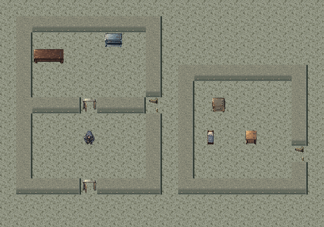
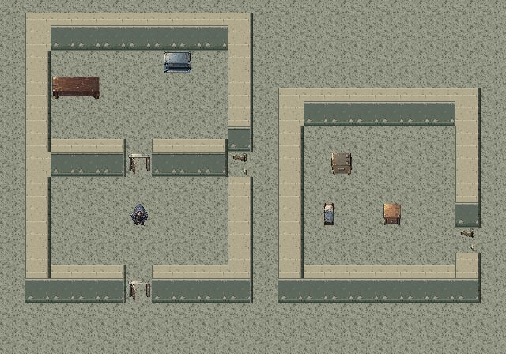
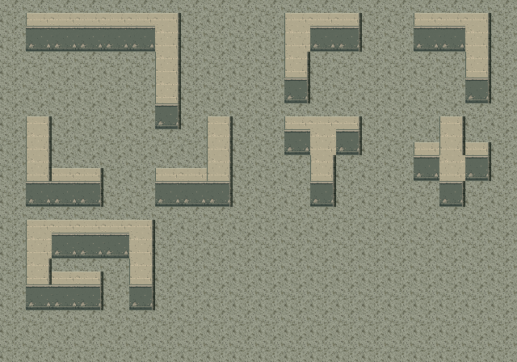
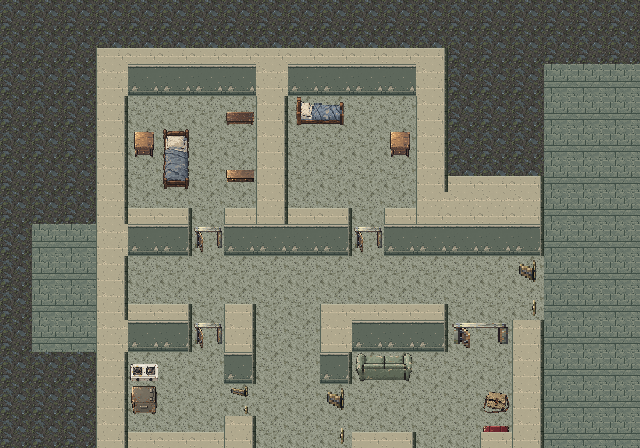
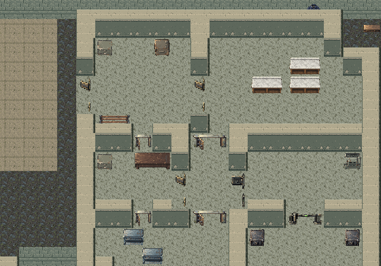

连续墙体 · 1.5格高墙重绘
32×48视觉尺寸，32×48碰撞范围；墙脚固定，向北抬高16px。浅色石墙顶、深灰绿抹灰立面、暗东侧面分层拼接。左上光源、75°高角度正交俯视，与现有容器和家具协调。已接入游戏与离线版，碰撞精确增加北侧16px，门洞保留开口。
实际提示词与原稿 · 验证记录 · 墙体规范 · 进入游戏
undefined
assets/tiles/wall.png32×32px · 点击查看生成原稿
undefined
assets/tiles/wall_face_s.png32×32px · 点击查看生成原稿
undefined
assets/tiles/wall_face_e.png4×48px · 点击查看生成原稿
同一场景 · 重绘前后

上一版32px墙体 · 12px短墙面
新版48px高墙 · 浅石墙顶、32px抹灰墙面、暗色侧边拼接检查 · 横墙 / 纵墙 / 四角 / 凹口 / T字 / 十字

使用游戏中的同一绘制函数，内侧连接不加重复立面；全部图像保持左上光源。真实地图

老公寓 · 门厅、内墙与多个出入口
银行旧址 · 前厅与纵深分区参考图分析：借鉴连续轮廓、墙面明暗分层和墙脚收口，不复刻原作建筑。视觉向北延伸半格，同步扩展碰撞；加高部分按探索状态显示，保持实体不透明。破口与玻璃仍采用现有专用图。